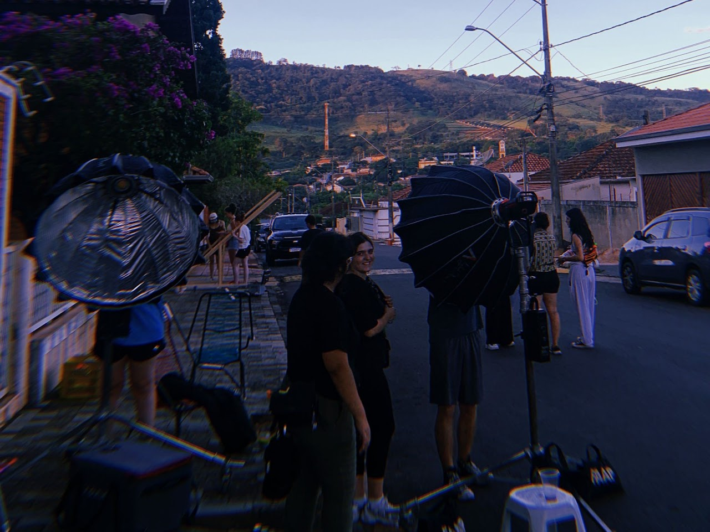
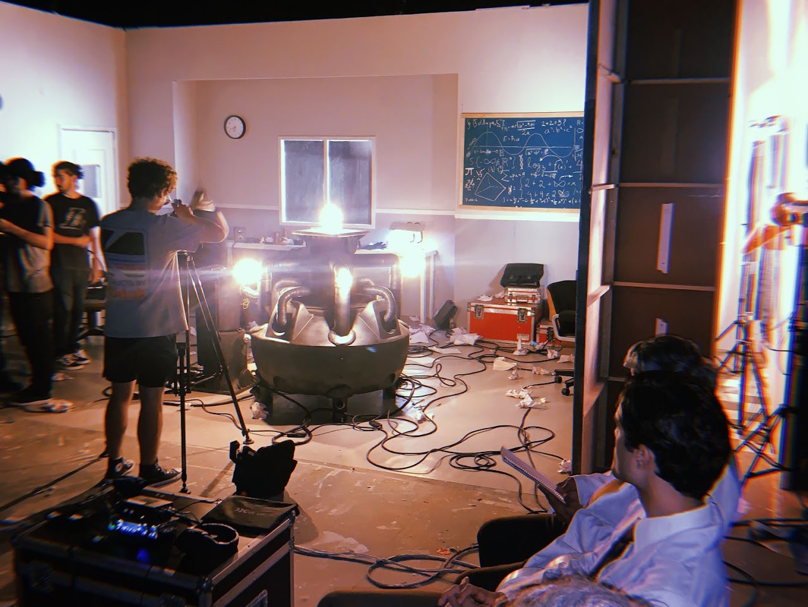

Foto still · 2024
O Que Restou de Lá
A Máquina do Dr. Reiner
Seleção de fotografia still de projetos que estive presente.
- Categoria
- Fotografia
- Função
- Foto still
- Ano
- 2024
- Formato
- JPEG
Sobre os
projetos
Espaço para contextualizar as produções e apresentar a seleção de fotografias still.
Seleção fotográfica
Fotografias
Dois projetos


